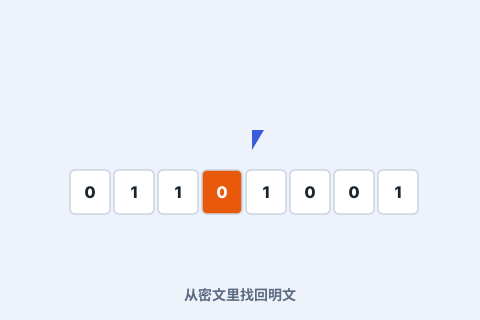

一、会变的密码机
恩尼格玛每天更换接线与转子，可能的密钥多到天文数字。传统人力破译几乎不可能。

二、炸弹机
图灵设计的“炸弹机”用电动机电逻辑瞬间尝试成千上万种组合，自动筛掉不可能的密钥，极大缩短破译时间。
三、改变了战争
盟军由此读到德军动向，史家估计破译工作让二战提前结束、挽救了无数生命。图灵的工作是其中的核心。
恩尼格玛每天更换接线与转子，可能的密钥多到天文数字。传统人力破译几乎不可能。

图灵设计的“炸弹机”用电动机电逻辑瞬间尝试成千上万种组合，自动筛掉不可能的密钥，极大缩短破译时间。
盟军由此读到德军动向，史家估计破译工作让二战提前结束、挽救了无数生命。图灵的工作是其中的核心。